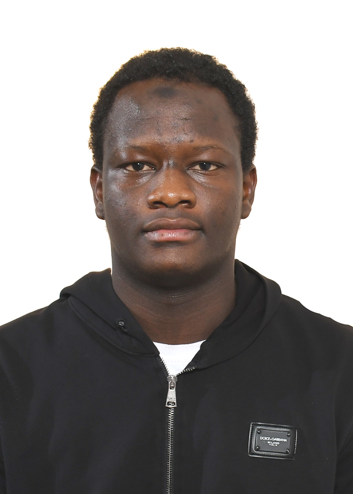

Finissant en informatique (UQAC, Hiver 2026) – Cybersécurité défensive

Je suis passionné par le développement logiciel, l’infonuagique (Azure) et la cybersécurité. Je cherche un stage / premier emploi pour mettre à profit mes compétences techniques et mon esprit d’équipe.
Langages : Python, Java, C++, SQL, HTML5, CSS3, JavaScript
Frameworks / Outils : Flask, Peewee, Docker, Git/GitHub, VS Code, RStudio, Visual Studio
Bases de données : SQLite, PostgreSQL, CosmosDB, MySQL
Cloud & DevOps : Azure (Event Hub, CosmosDB, Key Vault, CI/CD)
Cybersécurité : sécurité applicative, gestion des accès, détection de vulnérabilités
📧 Courriel : diallosalifou86@gmail.com •
🔗 LinkedIn : linkedin.com/in/salifou-diallo-3117702b2 •
🌐 GitHub : github.com/SalifouDiallo
🏙️ Localisation : Chicoutimi (Québec), Canada